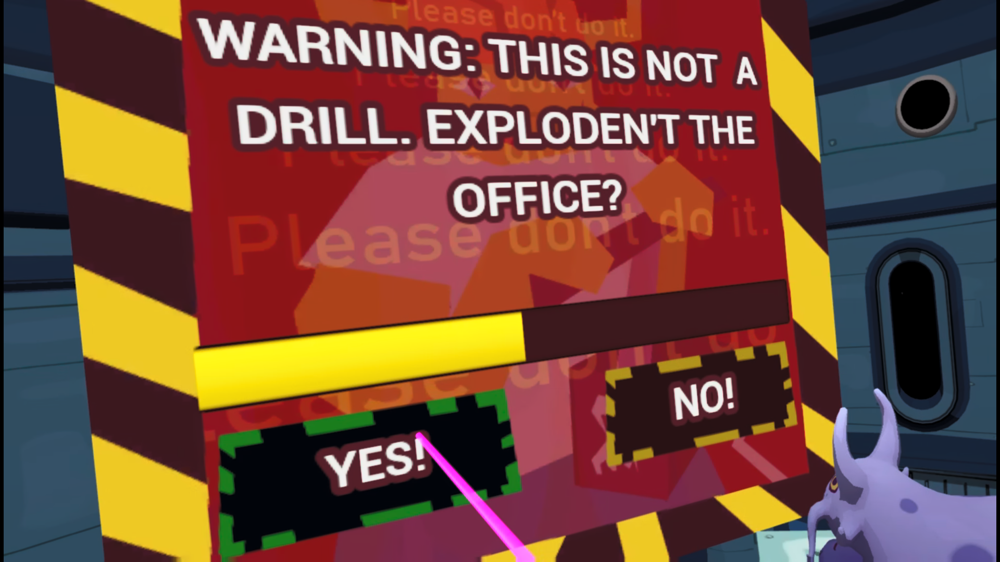
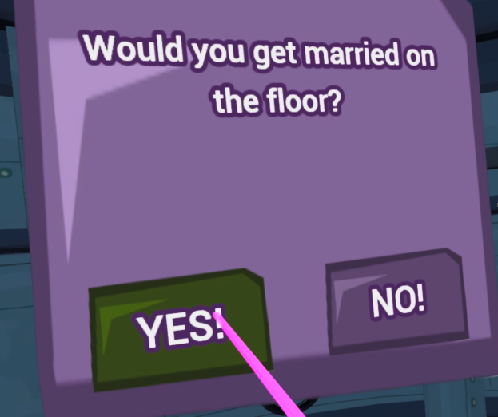
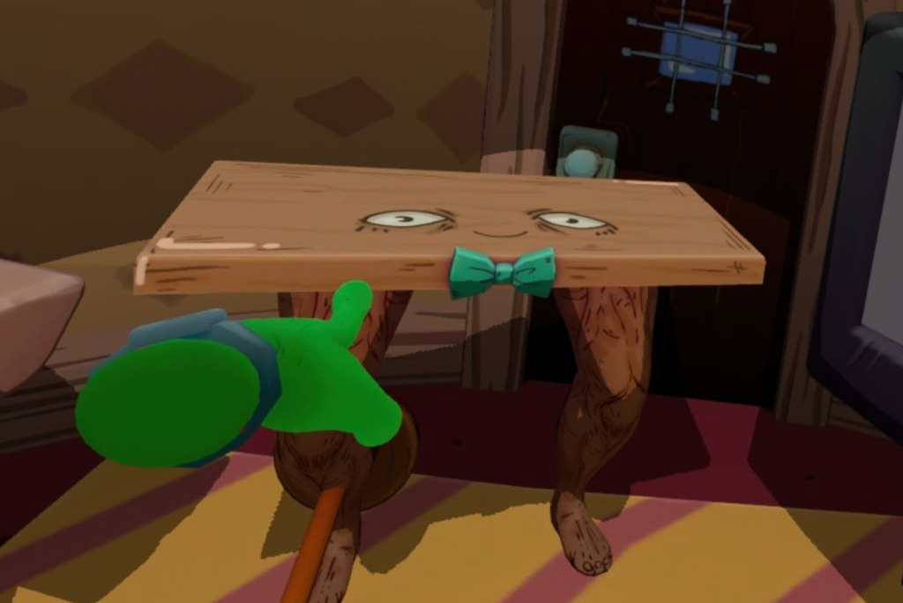
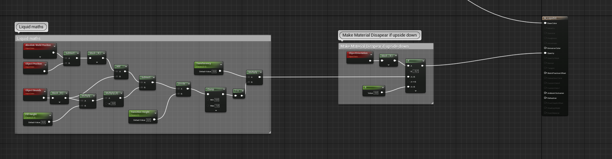

Alien Intern VR
Duration
9 weeks
Languages
C++, Blueprints
Engine
Unreal Engine 5
Platforms
PSVR2
Alien Intern VR is a job simulator/comedy game bulit around on so-called modules, which are different distractions and job tasks the player needs to get through in order to get to the next day. Unless the player wants to explode!
TL;DR
My responsiblities for this project was mainly the programming side of UI/UX and making modules.
My work on the UI included making custom c++ classes for entire widgets, but also for indivdual elements such as buttons for easy modification and reusability.
I had a lot of freedom over how the modules I created were supposed to play out. So I had the opportunity to design a sizable portion of them in addition to programming them primarily in blueprints.
The UX work I made mainly consisted of making humorous death screens and creating simple VFX and implementing already existing ones for indicating completion or failure.
More info
UI with UMG and C++
+
Modules
+
UI based Modules
Both of the UI modules where built up in an identical manner, utilizing the same base classes and similar blueprints.
When the module is called upon to begin, they both generate semi-random texts that define how the module will play out.
The Yes/No module is failable, so on start the module generates two random booleans to determine whether it is a drill and whether it will "exploden't" the office.
These booleans will determine if the player succeeds once they make their selection (or the timer expires).
The Closed AI module exists only as a distraction. The module selects at random from three different arrays, which containins parts of questions.
This often leads to some bizarre and fun questions. The player's choice of answe doesn't matter and will always remove the pop-up...
Unless the small chance where the question "would you like to restart the day?" appears.
If it happens, the player could unintentionally restart the current day after receiving a confirmation.
Weightlifter table
The weightlifter table, or gymbro as we often called him, is a distraction module ment to disrupt the players focus.
Aside from nagging on the player to help him out on his leg day, he will also steal the players in-game headset.
To make gymbro work, I've had to work with animation blueprints, Viktors sound system, sound cues, etc.
Which I've learned a lot about Unreals built in systems, instead of just working with C++.
z§W
(click on images to enlarge them!)
Yes/No explosion module
Closed AI
Weightlifter table
UX
+
Miscellaneous
+
Tipping water shader
As a small last minute detail for the game, we wanted to add coffee to some of our coffee cups.
For that we needed some shaders that would keep the coffee plane to the world.
Afterwards, I got help from André to create some simple vfx,
which start when the cup is tilted beyond a certain degree.
(click on images to enlarge them!)
